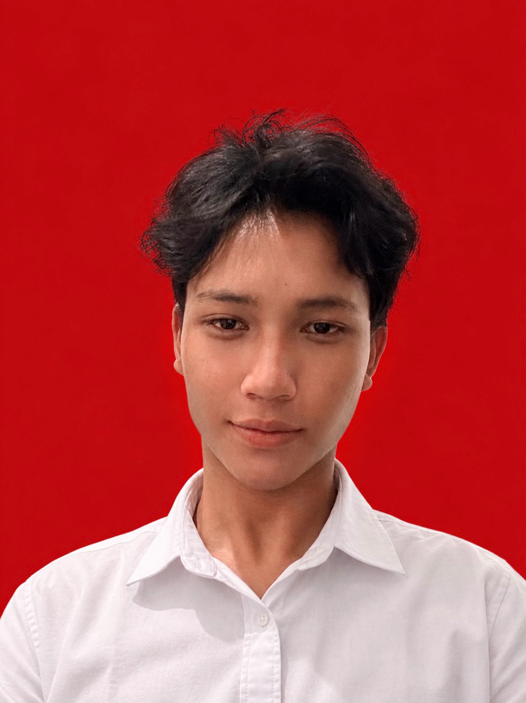

INFORMATION SYSTEMS STUDENT
Hello, I'm
Owen's Christofer Ginting.
Aspiring Web Developer & UI/UX Designer.
Exploring technology, building ideas, and creating meaningful digital experiences.

01 / ABOUT ME
Getting to know me.
A little introduction.
I am an Information Systems student at Universitas Negeri Surabaya with a strong interest in technology, programming, and digital innovation.
I am passionate about exploring how technology can be used to solve real-world problems, particularly through digital solutions that connect technology with business needs.
Currently, I am focusing on developing my skills in Web Development and UI/UX Design while continuously learning new technologies and expanding my knowledge in Information Systems.
I believe that technology is not just about creating something new, but also about making things more useful, accessible, and meaningful.
Owen's Christofer Ginting
26051214094
Information Systems
Universitas Negeri Surabaya
02 / EDUCATION
My educational background.
My academic journey and learning experiences.
Universitas Negeri Surabaya
Information Systems
Currently pursuing undergraduate studies and developing knowledge in information technology and digital systems.
SMAK Ignatius Slamet Riyadi
Senior High School
Completed secondary education and began exploring interests in technology and personal development.
03 / WHAT I CAN DO
Skills & interests.
Tools and technologies I have explored and continue to develop.
HTML
Understanding basic website structures and organizing web content.
INTERMEDIATEPython
Exploring programming fundamentals and writing simple programs.
BEGINNERCanva
Creating visual content, presentations, and creative designs.
INTERMEDIATEMicrosoft Office
Creating documents, organizing information, and designing presentations.
INTERMEDIATEAdobe Photoshop
Editing images and creating visual designs using graphic design tools.
BASICCurrently exploring Web Development and UI/UX Design.
04 / MY JOURNEY
Always learning, always growing.
Every journey begins with curiosity. My interest in technology has encouraged me to explore programming, digital design, and the possibilities of information systems.
As I continue my academic journey, I aim to strengthen my technical foundation, improve my creative thinking, and develop digital solutions that bring value to people's everyday lives.
Learning. Exploring. Building.
One step at a time.
05 / GET IN TOUCH
Let's connect and
create something.
I'm always open to connecting with new people, exchanging ideas, and exploring opportunities in technology and digital creativity.
Say Hello ↗